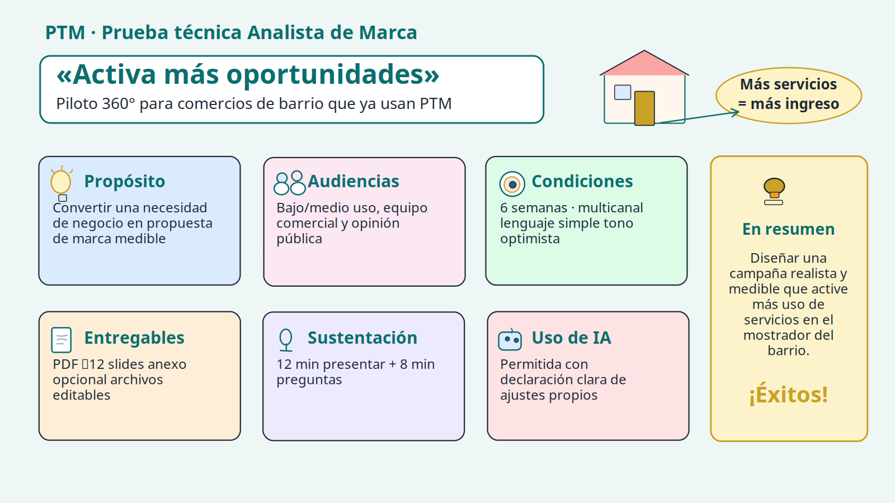
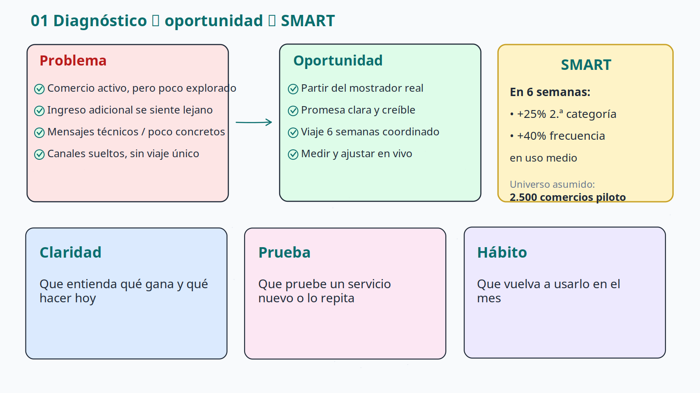
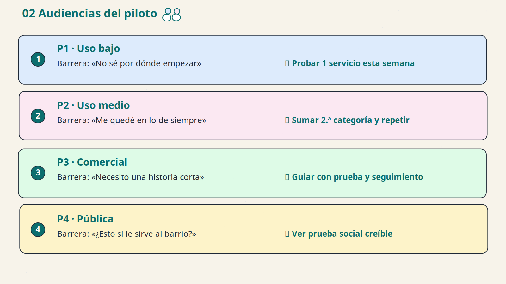
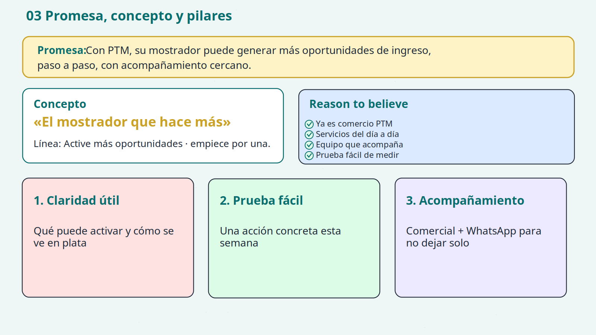
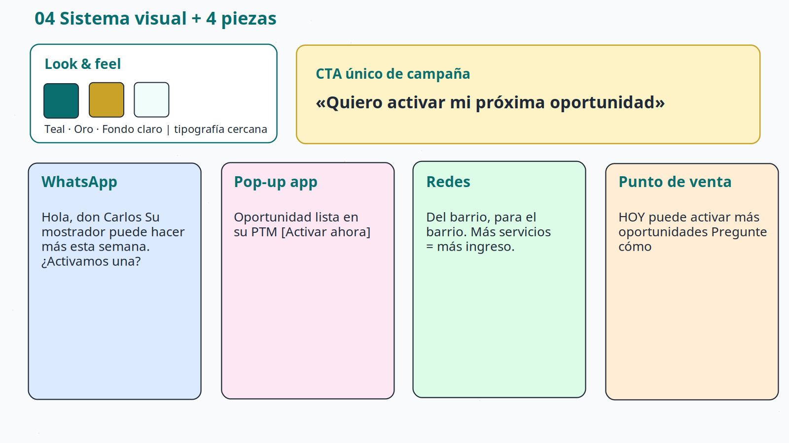
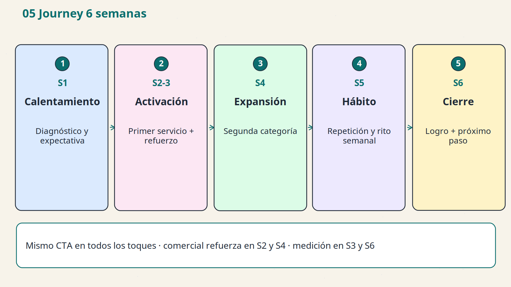
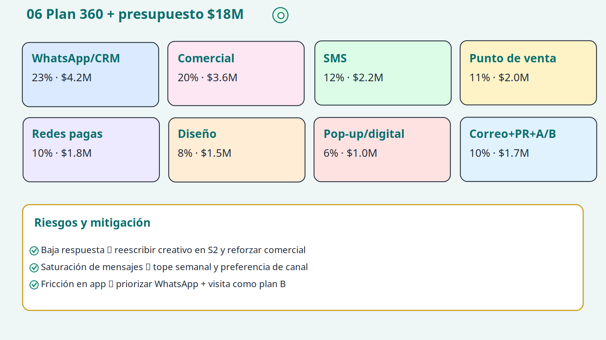
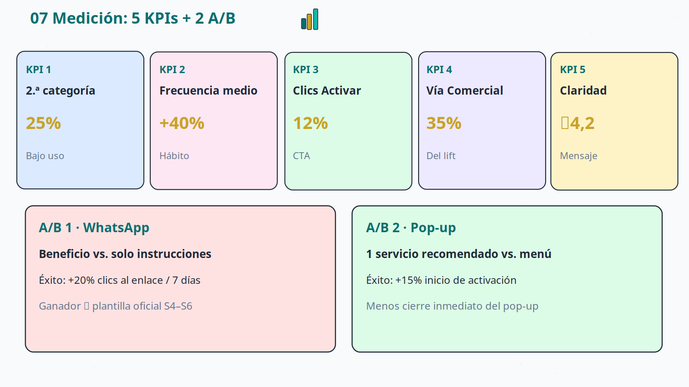
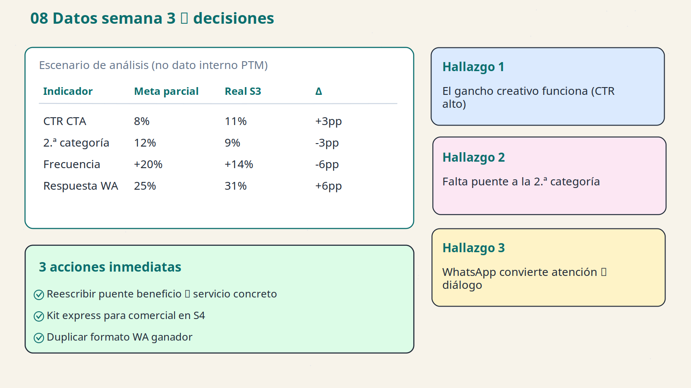
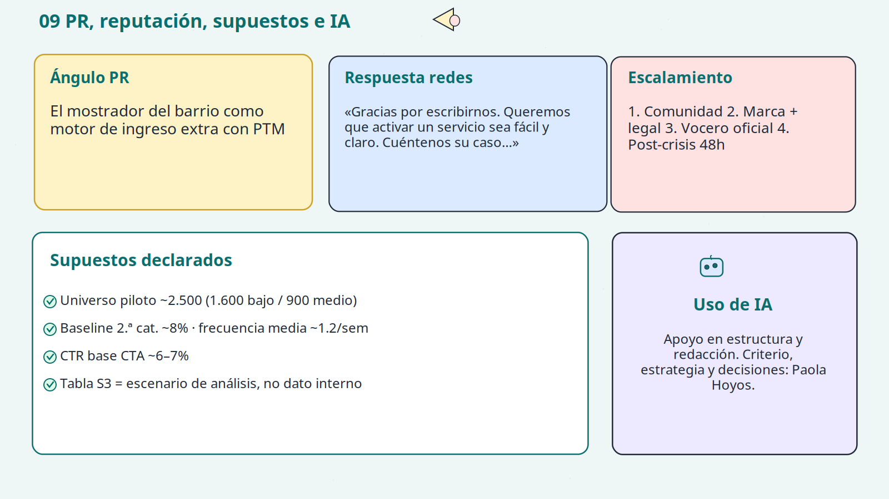

PTM · Portada · Activa más oportunidades · Ilustración 1/10 · Paola Hoyos

PTM · Diagnóstico · problema → SMART · Ilustración 2/10 · Paola Hoyos

PTM · Audiencias P1–P4 · Ilustración 3/10 · Paola Hoyos

PTM · Promesa, concepto y pilares · Ilustración 4/10 · Paola Hoyos

PTM · Sistema visual y piezas · Ilustración 5/10 · Paola Hoyos

PTM · Journey 6 semanas · Ilustración 6/10 · Paola Hoyos

PTM · Plan 360 y presupuesto · Ilustración 7/10 · Paola Hoyos

PTM · KPIs y pruebas A/B · Ilustración 8/10 · Paola Hoyos

PTM · Datos → hallazgos → acciones · Ilustración 9/10 · Paola Hoyos

PTM · PR, supuestos e IA · Ilustración 10/10 · Paola Hoyos